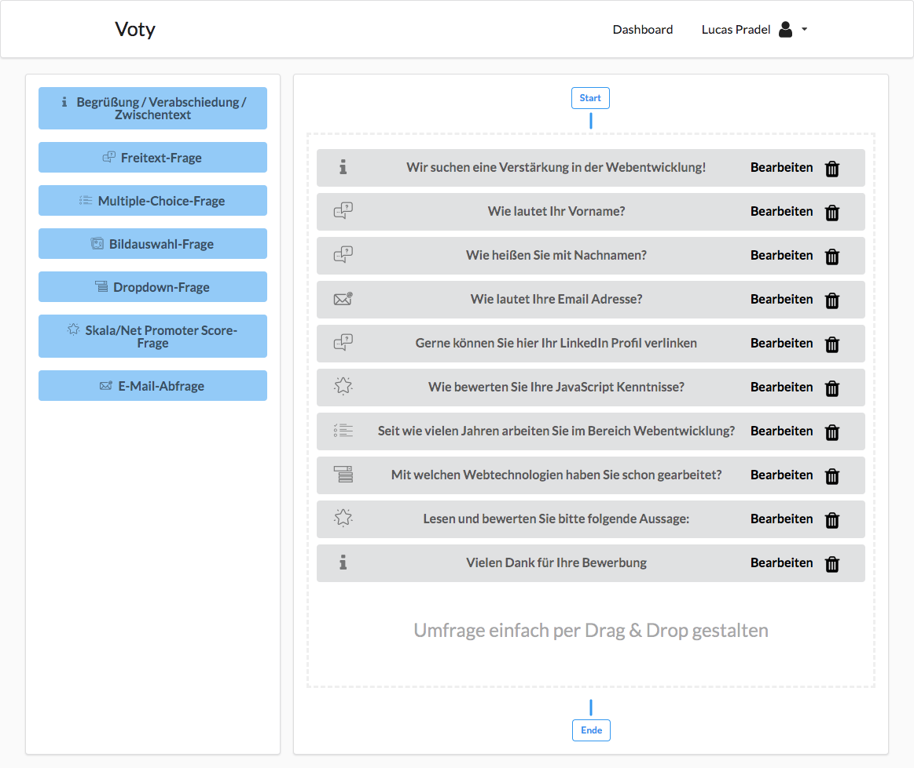

{{> logo file="logo_react.png" name="React"}}
{{> logo file="logo_graphql.png" name="GraphQL"}}
{{> logo file="logo_aws.png"}}
{{> logo file="logo_serverless.jpg"}}
{{> logo file="logo_semantic.jpeg" name="Semantic UI"}}
{{/references-detail}}
Guter Überblick über meine erstellten Umfragen

Einfache Erstellung von Umfragen

Alle Freiheiten beim Konfigurieren von Fragen

Schnelles Antworten durch benutzerfreundliche Bedienung
Analyse der Ergebnisse durch dynamische Charts
{{> references-navigation}}
{{> contacts}}
{{> cookie-popup}}